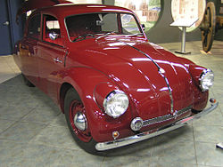
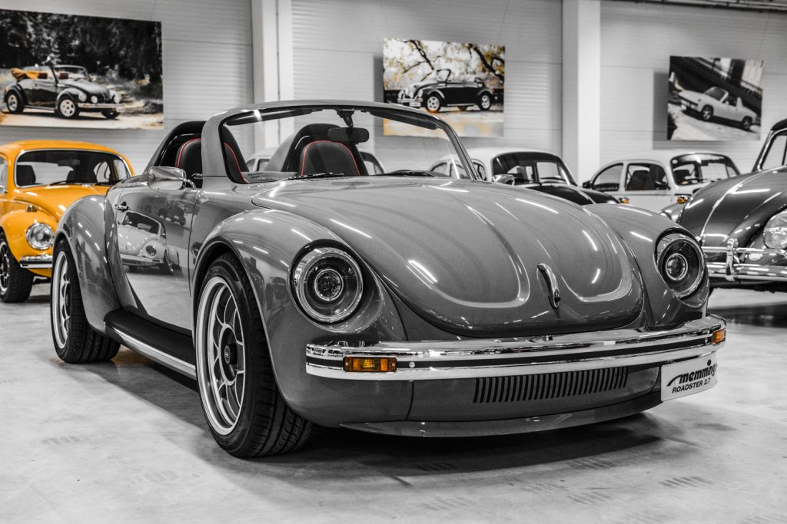

El volkswagen Beetle, Escarabajo, Sedan o Fusca fue uno de los autos mas
longevos e historicos de la industria automotriz junto con el Ford T y el Citroen 2CV, Pero veamos cual es su historia
Categorias
Los origines del Volkswagen Tipo 1 (Beetle) se remontan hacia 1931 (para este tiempo Ferdinand Porsche ya habia presentado el Porsche Tipo 12 del cual luego se hiban a tomar varios elementos de diseño)
Para este tiempo el regimen de Alemania estaba encaminando sus esfuerzos para la produccion de un automovil accesible (un auto del pueblo: Volkswagen en Aleman) para la gran mayoria del pueblo,
Se estaba construyendo una red de autopistas para unir toda Alemania por carretera rapidamente (Despues esta Autopista se extenderia hasta Suiza y Austria),
Porsche Tipo 12
TatraT97
Aunque su existencia comenzo con un nombre normal "Tipo 1" o "KdF Wagen", con el transcurso de los años comenzaron a aparecer apodos por todo el mundo para nombrarlo
dependiendo del pais, como: Escarabajo en Argentina, Chile, Ecuador, España, El Salvador, Paraguay, Perú y Uruguay Pichirilo en Colombia, Ecuador y Venezuela, KÄfer en Alemania,
Peta o Tortuga en Bolivia, Fusca en Brasil, Sapo en Perú Bubbla en Finlandia, Coccinelle en Francia, Cucaracha en
Guatemala y Honduras, Maggiolino en Italia, Sedan, Vocho o Vohicto en Mexico Volky en Puerto Rico Kever en Holanda y Belgica, Cepillo en
Republica Dominicana y Beetle o Bug en los paises angloparlantes entre otros
La configuracion elegida para el Beetle fue motor y traccion trasera Para favorecer el volumen interior del coche, el motor se situaba por detrás del tren trasero.
 Sin embargo, para no comprometer la estabilidad, la caja de cambios, el diferencial y el propio motor formaban un transeje construido íntegramente en aleación ligera y
Sin embargo, para no comprometer la estabilidad, la caja de cambios, el diferencial y el propio motor formaban un transeje construido íntegramente en aleación ligera y
muy compacto,favorecido por la disposición del motor boxer de cuatro cilindros opuestos, que lo hacían bajo y corto reduciendo así el momento polar de inercia.
Gracias a esta disposición boxer-longitudinal trasera del motor, se conseguía un comportamiento similar al de los motores traseros situados por delante del eje
sin comprometer el volumen del asiento trasero.
Para la refrigeración del motor se utilizó un sistema por aire que evitaba los problemas de la refrigeración por agua en los motores traseros.
A diferencia de los sistemas empleados en microcoches hasta la fecha, utilizaba aire forzado mediante ventilador, esto era posible gracias a emplear
bancadas de solo dos cilindros,lo que permitía que el aire refrigerara correctamente los cilindros traseros.
Adicionalmente un enfriador del aceite del motor (ubicado en la cubierta del ventilador del motor) garantizaba la correcta temperatura de funcionamiento y la larga vida del motor,
optimizado por un termostato que evitaba la puesta en marcha del enfriador de aceite con el motor frío. Los modelos posteriores de carburador ofrecieron regulador del aire de admisión ("estrangulador") automático.
Ficha Tecnica
Motor: Trasero, 4 cilindros opuestos tipo boxer 985cc refrigerado por aire
Potencia:25CV 3,300rpm max
Transmicion: Manual 4 Marchas
Recomendado:¿Como es el Motor Boxer? La respuesta en el video de aca abajo
Anque en el video no vemos el motor del Beetle en si, Igual nos sirve para saber como es Ya que lo unico que puede cambiar es la cilindrada, sistema de inyeccion, refrigeracion,etc Por ende nos sirve para entender el concepto del Motor Boxer
El primer Beetle descapotable se lanzo en 1949 un biplaza Hebmüller-Cabriolet que fue producido hasta
.jpg) la destrucción de la planta por un incendio en 1953.Hebmüller fabricó a partir de marzo de 1949 un total de
la destrucción de la planta por un incendio en 1953.Hebmüller fabricó a partir de marzo de 1949 un total de
696 ejemplares, Hoy en día son sumamente codiciados.
El Escarabajo Cabriolet 4 plazas (Tipo 15) comenzó su producción en 1949 por Karmann en Osnabrück. Fue en 1948
cuando Wilhelm Karmann compró un sedán escarabajo,de Volkswagen y lo convirtió en un convertible de cuatro plazas.
Después de presentarlo con éxito a Volkswagen en Wolfsburg, la producción comenzó en 1949.Luego de una serie de
alteraciones estilísticas y técnicas hechas al cabriolet Karmann,20 (correspondientes a los muchos cambios que se hicieron en el Volkswagen
Escarabajo a lo largo de su historia), el último de los 331 847 descapotables salió de la línea de ensamblaje el 10 de enero de 1980|

En 1968 se lanzó una edición limitada de 256 unidades Semiautomáticas que se distribuyeron por todo el mundo.
Esta edición limitada tenía la particularidad de que en la parte trasera del motor aparece el rótulo "AUTOMATIC-Stickshift".
Ninguna de estas unidades se quedó en la fábrica de Alemania, se vendieron todas.
Al igual que sus contemporáneos como el Mini Cooper y el Citroen 2CV, El Volkswagen Tipo 1 ha sido considerado una especie de automóvil "de culto"
-El Volkswagen Tipo 1 ha aparecido en infinidad de películas de todo el mundo. Stanley Kubrick utilizó uno en su película El Resplandor.
También, Kevin Bacon lo utilizaba como su coche personal en la película Footloose, donde interpretaba a un adolescente rebelde.
-En la serie animada transmitida entre 1984 y 1987 llamada Transformers G1 y en la película animada de 1986, es usado un Volkswagen Beetle
de color amarillo como el modo alterno del Autobot Bumblebee, y más tarde este modelo es reutilizado en la película spin-off de Transformers Bumblebee.
-En la serie animada Astuto Wheelie el protagonista es precisamente un Volkswagen Tipo 1 de color rojo con vida propia.
Entre 1968 y 2005, un modelo del año 1963 de color blanco perla y con el número 53 y bandas azul, rojo y blanco, de nombre Herbie, protagonizó un papel
estelar en la serie de películas de Disney llamadas "Cupido Motorizado" o tambien conocidas como "Herbie a toda Marcha".

-Un "Wunderkäfer" llamado DuDu apareció en una serie de películas para niños en Alemania.
-Durante los años 70 el Tipo 1 fue utilizado artísticamente para su promoción. Varios videojuegos lo han incluido, mencionando Beetle Crazy Cup
de la desarrolladora Europea Infogrames (Atari) donde este mismo y algunas de sus variantes son los protagonistas, y es además uno de los autos
a escala que más han producido por todo el mundo.
-En la famosa carátula del disco Abbey Road de The Beatles, en la avenida donde el cuarteto es captado por la foto, aparece un VW Beetle blanco.
-En música, el Tipo 1 también ha servido de inspiración al cantautor guatemalteco, Ricardo Arjona, con su éxito titulado "Historia de taxi", que
fue escrita y compuesta por el mismo cantautor, posteriormente publicado en su álbum discográfico titulado Historias de 1994. En 2007, su álbum
Quien dijo ayer, contiene una versión de "Historia de taxi" a dúo con el cantante y actor estadounidense de origen puertorriqueño Marc Anthony.
El videoclip de esta canción muestra al taxista interpretado por el mismo Ricardo Arjona y su taxi, un Volkswagen Beetle blanco, con una historia
similar a la de la famosa película de Herbie o el Cupido Motorizado.
-Según una conversación con el periódico chileno La Cuarta, debido a la austeridad en que vive, el presidente uruguayo Pepe Mujica utiliza como
Auto Presidencial un Volkswagen Fusca (un Tipo 1 hecho en Brasil) modelo 1986 para desplazarse a sus actividades habituales.

Ya para mediados de los años 1990 Volkswagen estaba trabajando en el reemplazo del Beetle un auto que se mantuvo sin mayores cambios esteticos desde 1938
(Los cambios mas significativos se realizaron en el motor llegando a obtener 50CV, Aunque tambien se realizaron cambios esteticos)
El ultimo Beetle que vio la luz fue un 30 de Julio de 2003 en Mexico
Retirandose asi con un record de produccion a sus espaldas, siendo el Beetle el auto que mas tiempo se fabrico hasta hoy, superando al Ford T y el Citroen 2CV acumulando mas de 21Millones de unidades producidas
El Memminger Roadster 2.7 es un ConceptCar presentado en el 2018 creado y propuesto por la compañia Memminger Feine-Cabrios, quienes lo construyeron basandose en el Beetle original.

 La empresa Memminger Feine-Cabrios esta especializada en Beetles clasicos, dado que el fundador de la marca (Georg Memming) comenzo a restaurarlos desde 1992.
La empresa Memminger Feine-Cabrios esta especializada en Beetles clasicos, dado que el fundador de la marca (Georg Memming) comenzo a restaurarlos desde 1992.
El Memminger Roadster presenta una imagen agresiva con insporacion retro, Bajo el capot nos encontramos con un motor boxer de 2,7l capaz de producir 210CV y 247Nm de Torque acoplado a una caja
de cambios manual de 5 velocidades, Para que el mismo entrara en el auto hubo que alargar la distancia entre ejes, se aumento tambien el ancho considerablemente, se reforzo la suspencion
pesa 800kg y seria capaz de alcanzar los 200Km/h